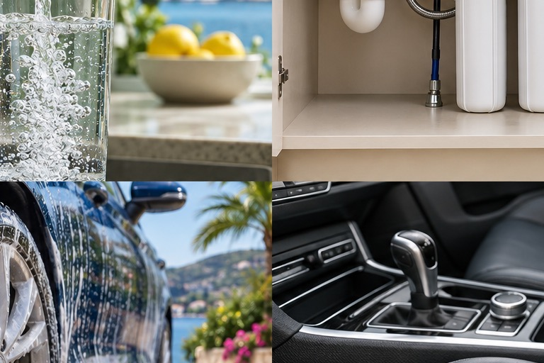

Su Arıtma
Soğucak’ta tezgâh altı arıtma hazırlığı
Tezgâh altı arıtma cihazı için dolap ölçüsünü, gider bağlantısını ve bakım erişimini önceden kontrol edin.
Yazıyı okuMutfak dolabındaki ölçüyü, su bağlantısını ve günlük kullanım miktarını birlikte değerlendirin.

Dolabın genişlik, yükseklik ve derinliğini ölçerken sifon, çekmece rayı ve mevcut tesisatın kapladığı alanı işaretleyin. Ölçüyü cihazla birlikte kullanılacak tank ve filtrelerin servis boşluğuyla karşılaştırın.
Soğuk su vanasını ve gideri gösteren bir fotoğraf hazırlayın. Cihaza göre ilave musluk, gider bağlantısı veya elektrik gereksinimi değişebilir. Tezgâhta delik açılması gerekiyorsa malzemeyi ve mevcut delikleri önceden belirtin.
Günlük tüketiminizi, cihazın akış hızını ve kartuş değiştirme maliyetini birlikte değerlendirin. Davutlar veya Soğucak’ta dönemsel kullanılan bir ev için uzun süre bekletme ve yeniden kullanım talimatlarını da sorun.
Cihaz ve tank ölçüleri modele göre değişir. Kurulum şemasındaki ölçülerin yanında kartuşu çıkarabilmek ve vanaya ulaşabilmek için gereken boşluğu dikkate alın.
İVSU Blog
Su Arıtma
Tezgâh altı arıtma cihazı için dolap ölçüsünü, gider bağlantısını ve bakım erişimini önceden kontrol edin.
Yazıyı oku
Su Arıtma
Aylarca kapalı kalan bir yazlığı açarken mutfak bağlantılarına ve cihazın üretici talimatlarına sırayla bakın.
Yazıyı oku
Su Arıtma
Kuşadası’nda su arıtma teklifini cihaz, kurulum ve düzenli bakım kalemleriyle karşılaştırın.
Yazıyı oku